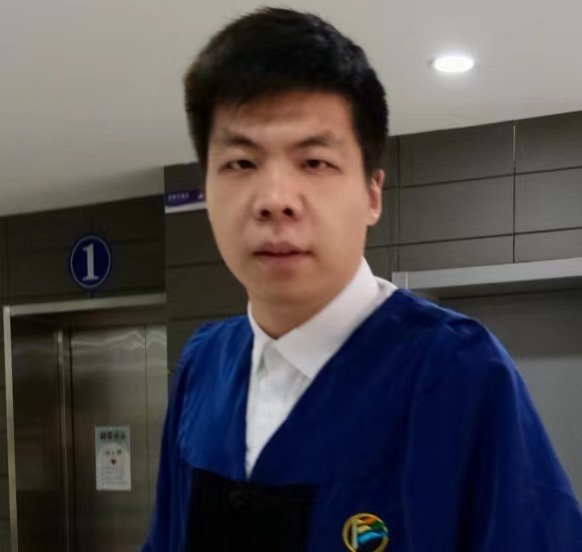

Faculties
-
Kai Chen 陈恺
Professor, Institute of Information Engineering, Chinese Academy of Sciences
Professor Kai Chen received his Ph.D. degree in the University of Chinese Academy of Science in 2010; then he joined the Chinese Academy of Science in January 2010. He became the Associate Professor in September 2012 and became the full Professor in October 2015. His research interests include software and system security, artificial intelligence security, intelligent terminal security, privacy protection.
-

Guozhu Meng 孟国柱
Associate Professor, Institute of Information Engineering, Chinese Academy of Sciences
Professor Guozhu Meng received his Ph.D. degree in the Nanyang Technological University, Singapore in 2017, then he joined the Chinese Academy of Science as an Associate Professor. His research interests include mobile security, big data analysis, and machine learning.
-

Ruigang Liang 梁瑞刚
Associate Professor, Institute of Information Engineering, Chinese Academy of Sciences
Professor Ruigang Liang received his Ph.D. degree in the University of Chinese Academy of Science in 2021; then he joined the Chinese Academy of Science in July 2021. He became the Associate Professor in October 2023. His research interests include software security, mobile security, and AI security.
-

Yue Zhao 赵月
Associate Professor, Institute of Information Engineering, Chinese Academy of Sciences
Professor Yue Zhao received her Ph.D. degree in the University of Chinese Academy of Science in 2022; then she joined the Chinese Academy of Science as an research assistant. Her research interest is AI Security.
-
Yi Yang 杨伊
Assistant Professor, Institute of Information Engineering, Chinese Academy of Sciences
Yi Yang received her Ph.D. degree in the University of Chinese Academy of Science in 2024. Her research interest is data-driven security and LLM-driven security.
Graduate Students
Ph.D. Students
-
Bolun Zhang 张伯伦
Bolun Zhang is a Ph.D. student in Insititute of Information Engineering, Chinese Academy of Sciences from 2018. His research interest is software security.
-
Hong Zhu 朱宏
Hong Zhu is a Ph.D. student in Insititute of Information Engineering, Chinese Academy of Sciences from 2018. His research interest is artificial intelligence security.
-
Jinwen He 何锦雯
Jinwen He is a Ph.D. student in Institute of Information Engineering, Chinese Academy of Sciences from 2019. Her research interests include artificial intelligent security and software security.
-

Zijin Lin 林子晋
ZiJin Lin is a Ph.D. student in Insititute of Information Engineering, Chinese Academy of Sciences from 2019. His research interests include software security and privacy protection.
-
Peizhuo Lv 吕培卓
Peizhuo Lv is a Ph.D. student in Insititute of Information Engineering, Chinese Academy of Sciences from 2020. His research interest is artificial intelligence security.
-
Peiwei Hu 胡佩威
Peiwei Hu is a Ph.D. student in Insititute of Information Engineering, Chinese Academy of Sciences from 2020. His research interest is software security.
-

Pan Li 李攀
Pan Li is a Ph.D. student in Insititute of Information Engineering, Chinese Academy of Sciences from 2020. His research interest is audio adversial examples.
-

Chang Yue 岳畅
Chang Yue is a Ph.D student at Institute of Information Engineering, Chinese Academy of Science from 2020. His research interests include software security and network security.
-

Miaoqian Lin 林妙倩
Miaoqian Lin is a Ph.D.student at Institute of Information Engineering, Chinese Academy of Sciences from 2020. Her research interests include software security.
-

Xueyang Li 李雪扬
Xueyang Li is a master student at Institute of Information Engineering, Chinese Academy of Sciences from 2020, and he transitioned to a Ph.D. track in 2023. His research interests include software security.
-
Jinghua Liu 刘菁华
Jinghua Liu is a Ph.D. student in Insititute of Information Engineering, Chinese Academy of Sciences from 2021. Her research interests include software security.
-

Jiachen Zhou 周嘉辰
Jiachen Zhou is a Ph.D. student in Insititute of Information Engineering, Chinese Academy of Sciences from 2021. His research interest is artificial intelligence security.
-

Zhiyu Zhang 张志宇
Zhiyu Zhang is a Ph.D. student at Institute of Information Engineering, Chinese Academy of Sciences from 2021. His research interests include software and system security and LLM for security.
-
Chengan Wei 魏成安
Chengan Wei is a Ph.D. student at Institute of Information Engineering, Chinese Academy of Sciences from 2021. His research interests include artificial intelligence security, interpretability and privacy computing.
-
Yanzhong Wang 王彦中
Yanzhong Wang is a Ph.D. student at Institute of Information Engineering, Chinese Academy of Sciences from 2021. His research interests include software security and analysis.
-
Shenchen Zhu 朱申辰
Shenchen Zhu was a master student at Institute of Information Engineering, Chinese Academy of Sciences from 2021 to 2024. Now he is a Ph.D. track student. His research interests include artificial intelligence security and software security.
-

Hongyu Wu 吴洪宇
Hongyu Wu is a Ph.D. student in Insititute of Information Engineering, Chinese Academy of Sciences from 2022. His research interest is artificial intelligence security.
-
Yu Peng 彭昱
Yu Peng is a Ph.D. student in Insititute of Information Engineering, Chinese Academy of Sciences from 2022. His research interests include artificial intelligence and software security, etc.
-
Congyi Li 李聪仪
Congyi Li is a Ph.D. student in Institute of Information Engineering, Chinese Academy of Sciences from 2022. Her research interest is artificial intelligent security.
-

Siliang Qin 秦嗣量
Siliang Qin is a Ph.D. student in Insititute of Information Engineering, Chinese Academy of Sciences from 2022. His research interests include artificial intelligent security and software security.
-
Longxing Li 李龙兴
Longxing Li is a Ph.D. student in Insititute of Information Engineering, Chinese Academy of Sciences from 2023. His research interests include software security and system security.
-
Yingjie Zhang 张英杰
Yingjie Zhang is a Ph.D. student in Insititute of Information Engineering, Chinese Academy of Sciences from 2023. His research interest is artificial intelligent security.
-
Yiran Xiahou 夏侯一冉
Yiran Xiahou is a Ph.D. student in Insititute of Information Engineering, Chinese Academy of Sciences from 2023. Her research interest is artificial intelligent security.
-

Tong Liu 刘通
Tong Liu a Ph.D. student in Insititute of Information Engineering, Chinese Academy of Sciences from 2023. His research interests include software security and artificial intelligent security.
-
Luyang Yu 余璐阳
Luyang Yu a Ph.D. student in Insititute of Information Engineering, Chinese Academy of Sciences from 2024. His research interest is software security.
-
Yujia Gong 龚昱嘉
Yujia Gong a Ph.D. student in Insititute of Information Engineering, Chinese Academy of Sciences from 2024. His research interests include artificial intelligence security and interpretability.
Master Students
-

Runze Zhang 张润泽
Runze Zhang is a master student at Institute of Information Engineering, Chinese Academy of Sciences from 2022. His research interest is software security.
-

Ruiyuan Li 李瑞源
Ruiyuan Li is a master student at Institute of Information Engineering, Chinese Academy of Sciences from 2022. His research interest is artificial intelligence security.
-

Yuling Cai 蔡毓灵
Yuling Cai is a master student at Institute of Information Engineering, Chinese Academy of Sciences from 2022. Her research interest is artificial intelligence security.
-
Fan Xiang 向凡
Fan Xiang is a master student in Insititute of Information Engineering, Chinese Academy of Sciences from 2022. Her research interest is artificial intelligence security.
-
Mingsi Wang 王铭思
Mingsi Wang is a master student in Insititute of Information Engineering, Chinese Academy of Sciences from 2023. Her research interest is artificial intelligence security.
-
Yilin Li 李懿霖
Yilin Li is a is a master student at Institute of Information Engineering, Chinese Academy of Sciences from 2023. His research interest is artificial intelligence security.
-
YuanGao 高原
Yuan Gao is a master student in Insititute of Information Engineering, Chinese Academy of Sciences from 2023. Her research interest is artificial intelligence security.
-
Qingxin Wang 王庆昕
Qingxin Wang is a is a master student at Institute of Information Engineering, Chinese Academy of Sciences from 2023. His research interests include software security.
-
Lijie Zhang 张丽婕
Lijie Zhang is a master student in Insititute of Information Engineering, Chinese Academy of Sciences from 2023. Her research interest is artificial intelligence security.
-
Hailong Chang 昌海龙
Hailong Chang is a master student at Institute of Information Engineering, Chinese Academy of Sciences from 2023. His research interests include software security and artificial intelligent security.
-
Kun Sun 孙堃
Kun Sun is a is a master student at Institute of Information Engineering, Chinese Academy of Sciences from 2023. His research interest is software security.
-
Jiaju Wu 吴家驹
Jiaju Wu is a is a master student at Institute of Information Engineering, Chinese Academy of Sciences from 2024. His research interest is artificial intelligent security.
-
Ruizhi Zhao 赵睿智
Ruizhi Zhao is a master student in Insititute of Information Engineering, Chinese Academy of Sciences from 2024. His research interest is software security.
-
Mingyang Sun 孙铭扬
Mingyang Sun is a master student in Insititute of Information Engineering, Chinese Academy of Sciences from 2024. His research interest is software security.
-
Shuhui Xiao 肖书慧
Shuhui Xiao is a is a master student at Institute of Information Engineering, Chinese Academy of Sciences from 2024. Her research interests include artificial intelligence security and software security.
-
Tianyi Xu 徐天翼
Tianyi Xu is a is a master student at Institute of Information Engineering, Chinese Academy of Sciences from 2024. His research interests include computer vision and self-driving.
Interns
-
Zhanhui Yuan 袁占慧 (2023.7-2024.7)
PLA Information Engineering University
Zhanhui Yuan is a Ph.D student in PLA Information Engineering University. He did his bacheor's thesis under the guidance of Prof. Kai Chen at IIE, CAS. His research interests include mobile security and privacy protection
Alumni
-
Bin Ma 马彬
XuanwuLab, Tencent
Bin Ma graduated from Institute of Information Engineering, Chinese Academy of Sciences with Master's degree in 2016. His research interests include mobile security, malware analysis and detection. He is also so interested in vulnerability discovery and had found many high-risk vulnerabilities in the client of Tencent QQ, UC Browser, Sina Weibo, etc.
-

Aohui Wang
KeenLab, Tencent
Anhui Wang graduated from Institute of Information Engineering, CAS with Master's degree in 2017. A Reverser and Pwner.
-

Yunhui Long
Summer intern (2017.5-2017.8)
Yunhui Long is a Ph.D. student in the Department of Computer Science at University of Illinois, Urbana-Champaign. Her research interests include privacy, machine learning, and security.
-
Zhen Wang
JD
Zhen Wang graduated from The University of Science and Technology Beijing (USTB) with Master's degree in 2016. His research interests include wifi defender, network analysis and detection. He is also proficient in the Video Surveillance System.
-
Qianqian Zhao 赵倩倩
CMB NETWORK TECHNOLOGY
Qianqian Zhao graduated from Institute of Information Engineering, Chinese Academy of Sciences with Master's degree in 2018. Her research interests include mobile security , network security and data security.
-

Yuxuan Chen 陈宇轩
Summer intern (2018.5-2018.8)
Yuxuan Chen is a Ph.D. student in the Department of Computer Science at Florida Institute of Technology. His research interests include security of machine learning and IoT.
-

Xiaokang Liu 刘小康
NXY Funds Clearing Center
XiaoKang Liu graduated from Institute of Information Engineering, Chinese Academy of Sciences with Master's degree in 2019. His research interests include malware analysis and detection , Reverser and APT Technology.
-

Mingming Zha 查明明
Department of Computer Science, Indiana University Bloomington
Mingming Zha graduated from Institute of Information Engineering, CAS with Master's degree in 2019. Now he is a Ph.D. student in the Department of Computer Science at Indiana University Bloomington. His research interest is program analysis.
-

Penghui Li
Intern(2018.10-2019.6)
Penghui Li is now a Ph.D student at the Chinese University Hong Kong, he did his bacheor's thesis under the supervision of Prof. Kai Chen at IIE, CAS. His research interests include malware analysis and privacy protection.
-

Yi Chen 陈怡 (Co-advised Ph.D.)
Department of Information Engineering, CUHK
Yi Chen graduated from Institute of Information Engineering, CAS with Ph.D.'s degree in 2020. Now, she is a postdoc in the Department of Information Engineering, the Chinese University of Hong Kong. Her research areas include 4G/5G security, mobile security and data-drive security.
-
Yingkun Wang 王映焜
ICSL, Huawei
Yingkun Wang graduated from Institute of Information Engineering, CAS with Master's degree in 2020. His research interests include mobile security, privacy protection, etc.
-

Xuejing Yuan 袁雪敬
School of Cyberspace Security, BUPT
Xuejing Yuan graduated from Institute of Information Engineering, CAS with a Ph.D.'s degree in 2021. Now, she is a Lecturer of Beijing University of Posts and Telecommunications (BUPT). Her research interest is artificial intelligence security.
-

Yuhang Zhao 赵宇航
CMRI
Yuhang Zhao graduated from Institute of Information Engineering, CAS with Master's degree in 2021. Her research interests include software security and network security.
-

Tao Lv 吕涛
EPFL
Tao Lyu graduated from Institute of Information Engineering, CAS with a Master degree in 2021. Now, he is a Ph.D. student at EPFL. His research interests vary in operating systems and software security.
-
Jiutian Zeng 曾九天
Security intelligence, Alibaba Group
Jiutian Zeng graduated from Institute of Information Engineering, CAS with Master's degree in 2021. His research interests include vulnerability detection, mobile security, natural language processing, etc.
-

Yaosong Lu 卢垚松
Kunlun, Baidu
Yaosong Lu graduated from Institute of Information Engineering, CAS with Master's degree in 2021. His research interests include trusted execution environment, hardware features, etc.
-

Yingzhe He 何英哲
Shield Lab, Huawei.
Yingzhe He graduated from Institute of Information Engineering, CAS with Ph.D.'s degree in 2022. His research interest is artificial intelligence security.
-

Jiangshan Zhang 章江山
Zhuque Lab, Tencent
Jiangszhang graduated from Institute of Information Engineering, CAS with Master's degree in 2022. His research interests include AI security, network traffic security, etc.
-

Chaoyang Lin 林超阳
MES, NIO
Chaoyang Lin graduated from Institute of Information Engineering, CAS with Master's degree in 2022. His research interests include IoT security, mobile security, system security, etc.
-

Ruishi Li 李蕊诗
NUS
Ruishi Li graduated from the Institute of Information Engineering, CAS with a Master's degree in 2022. Now, she is a Ph.D. at NUS. Her research interests include software security, natural language processing, and artificial intelligence security.
-
Xingbo Hu 胡兴波
Huawei
Xingbo Hu graduated from Institute of Information Engineering, CAS with Master's degree in 2022. Her research interest is artificial intelligence security.
-

Peiyuan Zong 宗珮媛
PengCheng Lab
Peiyuan Zong graduated from Institute of Information Engineering, Chinese Academy of Sciences with Ph.D.'s degree in 2023. Now, she is a Postdoctoral Fellow of PengCheng Lab. Her research interests include Underground Market, Privacy & Security, Network Attacking & Defense.
-

Weihao Huang 黄伟豪
School of Cyberspace Security, Sun Yat-sen University
Weihao Huang graduated from Institute of Information Engineering, Chinese Academy of Sciences with Ph.D.'s degree in 2023. Now, he is a Postdoctoral Fellow of Sun Yat-sen University. His research interests include software & system security, vehicle security and IoT security.
-

Dawei Wang 王大为
Zhongguancun Lab
Dawei Wang graduated from Institute of Information Engineering, Chinese Academy of Sciences with Ph.D.'s degree in 2023. His research interests include software security and natural language processing.
-

Zhixiu Guo 郭芝秀
CCB
Zhixiu Guo graduated from Institute of Information Engineering, Chinese Academy of Sciences with Ph.D.'s degree in 2023. Her research interests include software security and natural language processing.
-

Yunfei Yang 杨云飞
Institute of Information Engineering, Ph.D. Track Student
Yunfei Yang transitioned to Ph.D. track student of Institute of Information Engineering, Chinese Academy of Sciences in 2022. His research interests include software security, mobile security and network security.
-

Xiaodong Zhang 张晓东
Dalian Commodity Exchange
Xiaodong Zhang graduated from Institute of Information Engineering, Chinese Academy of Sciences with Master's degree in 2023. His research interest is mobile security.
-
Shufei Li 李澍非
Information Technology Bureau, China Development Bank
Shufei Li graduated from Institute of Information Engineering, Chinese Academy of Sciences with Master's degree in 2023. His research interests include system security and software security.
-

Qiucun Yan 闫秋存
Data Center, CCB
Qiucun Yan graduated from Institute of Information Engineering, Chinese Academy of Sciences with Master's degree in 2023. His research interests include malware detection, software security.
-

Qintao Shen 沈钦涛
National Key Laboratory of Behavioral Cognition in Cyberspace
Qintao Shen graduated from Insititute of Information Engineering, Chinese Academy of Sciences with Ph.D.'s degree in 2024. His research interest is system security.
-

Dandan Xu 徐丹丹
School of Cyber Science and Engineering, NJUST
Dandan Xu graduated from Insititute of Information Engineering, Chinese Academy of Sciences with Ph.D.'s degree in 2024. Now, she is a Lecturer at Nanjing University of Science and Technology (NJUST). Her research interests include program analysis, root cause analysis, fuzzing, vulnerability detection and automatic exploit generation.
-

Zizhuang Deng 邓子壮
School of Cyber Science and Technology, SDU
Zizhuang Deng graduated from Insititute of Information Engineering, Chinese Academy of Sciences with Ph.D.'s degree in 2024. Now, he is a Pre-appointed Associate Research Fellow at Shandong University (SDU). His research interests include system and software security.
-

Ying Cao 曹颖
Huawei (Shanghai)
Ying Cao graduated from Insititute of Information Engineering, Chinese Academy of Sciences with Ph.D.'s degree in 2024. Her research interests include program analysis, decompiling, compiling.
-

Yibing Lan 兰一冰
Data Center, CCB
Yibing Lan graduated from Institute of Information Engineering, Chinese Academy of Sciences with Master's degree in 2024. Her research interest is artificial intelligence security.
-
Lu Xiang 相璐
China Galaxy Securities
Lu Xiang graduated from Institute of Information Engineering, Chinese Academy of Sciences with Master's degree in 2024. His research interests include LLM security, software testing and malware analysis.
-
Kun Lai 赖堃
Alibaba Cloud Technology (Shanghai)
Kun Lai graduated from Institute of Information Engineering, Chinese Academy of Sciences with Master's degree in 2024. His research interests include confidential computing, model protection.
-

Hualong Ma 马化龙
Qiyuan Lab
Hualong Ma graduated from Institute of Information Engineering, Chinese Academy of Sciences with Master's degree in 2024. His research interests include artificial intelligence security, AIGC, singing vocal synthesizing.